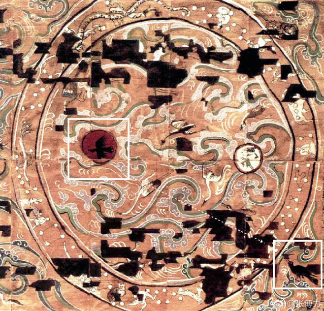
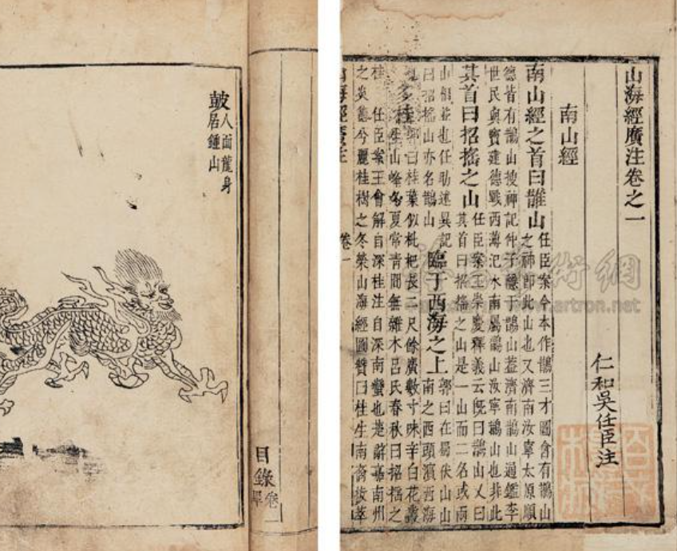
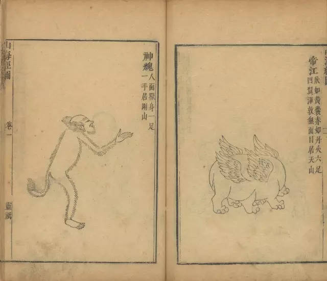

CHAPTER 01
汉 · 鸿蒙初开
“禹别九州，任土作贡，而益等类物善恶，著《山海经》，皆圣贤之遗事，古文之著明者也。”
— 刘歆《上山海经表》
《山海经》在汉代不仅是地理志，更是验证“祯祥变怪”的奇书。史载东方朔曾凭此书识破汉武帝时进献的“异鸟”食性，朝士由此多奇此书。
【古图遗恨】
马昌仪指出：“古图之学，由此而绝”。汉代以前虽有古图，但六朝后已佚散。今日所见多为明代后之重构。

造型拙朴夸张 · 线条刚劲流畅
CHAPTER 02
晋 · 奠基之作
东晋学者郭璞为《山海经》作注并创《图赞》，使此书从边缘文化正式进入主流学术视野。
〈 鹿蜀赞 〉
马质虎文，攘首吟鸣。矫矫腾群，佩其皮毛，子孙如云。
〈 凤凰赞 〉
凤凰灵鸟，实冠羽群。八象其体，五德其文。
〈 狌狌赞 〉
狌狌似狐，走立行伏。怀水挺方，涎腥明目。
〈 九尾狐赞 〉
厥声如诃，厥形如鸠。佩之辨惑，出自青丘。

CHAPTER 03
明清 · 图像爆发
明代版画 · 创作期
- 特征： 线条粗犷豪放，造型夸张，“向壁虚造”。
- 代表： 胡文焕《山海经图》、蒋应镐《全像》
“胥是模糊影响……颇富想象之力。” —— 郑振铎评
清代版画 · 精致期
- 特征： 线条细腻工整，注重背景氛围与写实感。
- 代表： 吴任臣《广注》、汪绂《山海经存》
“所志之博，都非后人所辨。” —— 陈一中评

CHAPTER 04
现代 · 学术重构
“《山海经》是一部奇书，好像是一块五彩缤纷的宝石……它是神话之渊府，地理之雏形，巫术之宝典，博物之志书。”
— 袁珂《山海经校注》
20世纪以来，以袁珂为代表的学者将《山海经》从考据学引向神话学。CNKI数据显示，1990年代起相关研究呈爆发式增长，涵盖考古、民俗、图像学及数字人文领域。

CHAPTER 05
数字新生
从文字到“数字生命”： 当代《山海经》正通过数字化技术重构。古籍数字化让文献“活起来”，图像数据库让图像“可检索”，AI创作让志怪“可生成”。
- ● 国家图书馆《山海经》知识库（shj.nlc.cn）收录92种古籍，免费向公众开放，让千年古本触手可及。
- ● 学者马昌仪《古本山海经图说》收录16个版本、1600余幅插图，构建起山海经图像谱系。
- ● 当代画师借助数字绘画工具，将《山海经》异兽以全新风格呈现，古老志怪在数字时代获得新生。